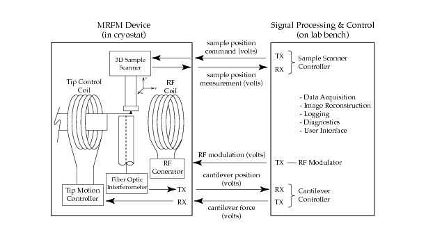
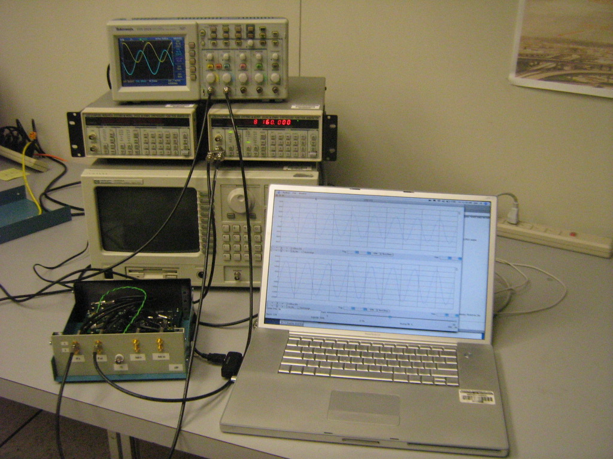

Jon Jacky, University of Washington, Quantum System Engineering (QSE) Laboratory. Revised Mar 2009, add link to RSI page.
This page provides files and directions for assembling and using an FPGA-based cantilever controller for Magnetic Resonance Force Microscopy (MRFM), using the commercially available USRP hardware and the open-source GNU Radio software, along with some additional software that we have written. In addition to the controller itself, we also provide software here to demonstrate how the controller can be integrated into an experiment.
A paper about this controller appeared in Review of Scientific Instruments. The preprint is available at the arXiv server.
Introduction Hardware Software Prerequisites Download Installation Demonstration License Acknowledgments
Cantilevers for MRFM are micromechanical oscillators that require feedback control. The controller damps the cantilever, resulting in smaller deflections, faster ringdown, and wider bandwidth than an uncontrolled cantilever. This is necessary for acquiring an image during an MRFM experiment. In the apparatus shown here, the cantilever controller would be connected between RX and TX in the lower right corner (RX is the controller input).
Cantilever controller design is discussed here, here, and here. An MRFM experiment is described here. A brief explanation of MRFM appears here.

The controller we provide here accommodates input and output signals
up to 2 volts peak-to-peak (-1V to +1v), digitized with a resolution
of 12 bits (input) and 14 bits (output), sampled at up to 64 MHz. The
demonstration provided here samples at 500 kHz, chosen for acoustic
cantilevers with resonant frequencies near 8 kHz. The controller
includes an IIR digital filter comprising two cascaded second-order
sections ("biquads"), which can implement transfer functions with up
to 4 numerator and 4 denominator coefficients. The signal and the
filter coefficients are represented by 24-bit integers (our software
translates floating point to appropriately scaled 24-bit integers).
In addition to the filter, the controller also includes an input
multiplexer and adder that selects and optionally adds two input
signals in all combinations. This is helpful for some
calibration protocols.
The controller characteristics (filter coefficients, multiplexer
settings etc.) can be set and continually adjusted from experiment
control software.
This photo shows a typical collection of equipment that can
demonstrate the controller, an example of the block labeled "on lab
bench" in the diagram above (on the right).
The two essential components are the USRP (lower left) and the
computer (lower right). The test equipment behind the USRP and
computer is optional.

The USRP is the GNU Radio hardware component, which includes the FPGA
and the data converters (ADCs and DACs). The cantilever signals
connect to the terminals on the USRP front panel. The controller
program (filter and multiplexer) executes on the FPGA in the USRP.
Technical information about the USRP is available here and
here.
A USRP
motherboard with daughterboards is shown here.
This photo shows our USRP in a homemade enclosure. The commercially
available USRP package now includes a case so it is no longer
necessary to make one.
The computer, called the host computer, is connected to the
USRP by the USB 2.0 bus. The host computer stores the controller
program that runs on the FPGA. Before an experiment, the host
computer is commanded to load the controller program into the FPGA.
During an experiment, the host computer executes experiment control
software that can continually adjust controller parameters and
acquire the measured signals.
This photo shows a Macintosh but almost any computer with a USB 2.0
port should work.
The controller itself (the mulitplexor and digital filter) executes on
the FPGA in the USRP. It is written in the
Verilog hardware
description language (HDL). The several Verilog source files are
compiled or synthesized into a single binary file called a
bitstream which is stored on the host computer and loaded
into the FPGA on command. The host computer can store several
bitstreams that provide different controller capabilities
and load them into the FPGA under program control.
We provide both the compiled bitstream and the Verilog source files
and for our controller. The controller also uses Verilog files from
the open-source GNU Radio project. Only the bitstream is needed to
run the controller. The Verilog files will be useful if you wish to
customize the controller or develop your own.
The experiment control software including calibration protocols, data
acquisition and storage, calculation of desired controller
characteristics, etc., executes on the host computer.
The host software is organized as a client and server. The client
comprises most of the experiment control, while the server is a small
component that copes with the details of the controller and its
interface. For example, the client calculates the desired transfer
function of the controller, expressed as floating point coefficients
for an IIR digital filter. The server refactors these coefficients
for cascaded second-order sections ("biquads"), translates them to
scaled 24-bit integers, and loads them into particular registers in
the controller using the USB 2.0 interface. The client
software does not depend on controller details such as filter
architecture, hardware organization, number representation, and
connection technology. Thanks to this organization, our experiment
control software is largely unchanged from earlier versions that used
completely different controller technology based on a digital signal
processor (DSP).
Client and server communicate by sending text messages over a TCP/IP
socket connection. They can execute on the same computer or
different computers (we have used both configurations).
The server also performs data acquisition, acquiring the stream of
digitized samples from the FPGA at two points in the signal path, at
the input and output of the digital filter. The server can optionally
display these data as a spectrum or as a time series on an
oscilloscope-like display, as shown in the photo above and the screen shot below.
We provide the complete server software. It is written in Python and
uses the open-source GNU Radio system and the open-source SciPy
scientific computing package.
We provide a simple client for demonstrations and diagnostics. It is
also written in Python, and also depends on SciPy (but not GNU Radio).
We also provide a very simple client extracted from our MRFM
experiment control software. It is written in LabView, and is
sufficient to demonstrate communication with the server. This client
is a LabView virtual instrument (VI) which could be incorporated into
a different experiment. The LabView client does not depend on GNU
Radio nor SciPy.
Obtain the USRP hardware, including
the LFRX and LFTX daughterboards, from
here.
Obtain and install the GNU Radio software, as described
here.
Obtain and install the SciPy software, as described
here.
Additional information about our GNU Radio and SciPy installations on the Mac
appear
here.
This gr-mrfm repository
contains several subdirectories:
The bin directory contains command scripts.
The python directory contains most of the host software,
including the server and its library modules, and the Python client.
The mrfm24 directory contains the controller software,
including mrfm.rbf, the bitstream that is loaded into the FPGA. It
also contains the Verilog source files and other files used to
synthesize the bitstream.
The labview directory contains the LabView client.
The repository contents are listed here.
The following instructions are for Unix-like systems, including Mac
OS X. Some adjustments may be necessary on your system, especially to
accommodate your GNU Radio installation.
Clone the gr-mrfm repository. It is convenient to clone the
repository in your home directory.
Prepare to invoke the commands. It is convenient to put the
gr-mrfm/bin directory in your path, or copy its contents to a
directory already in your path, such as ~/bin.
Check that the paths in the command scripts (in the bin directory)
will work with your installation. Change them if needed.
The gr-defs script defines PYTHONPATH with the path to the
Python files in your GNU Radio installation. If you already arranged
to define PYTHONPATH when you installed GNU Radio, you may not need
gr-defs.
The cserver-restart script defines CSERVER_DIR, the path to the Python
directory for our MRFM software. If you did not clone the repository
under your home directory, you must change this definition.
If you are using a Macintosh, in the python directory rename
cserver-cmd.mac to cserver-cmd.
Copy the bitstream mrfm.rbf to a directory in your GNU Radio
installation where the USRP can find it. Typically, this would be
gr/share/usrp/rev4, along with the other .rbf files.
To load the controller into the FGPA:
Connect the USRP to one of the host computer's USB 2.0 ports.
Invoke gr-defs, if that is needed to make the GNU Radio software
available in this session. Alternatively, when you installed GNU
Radio you may have arranged to make it available in every session.
Invoke cserver-restart to start the server.
This in turn invokes cserver-cmd in the python directory, which
finally invokes the server program cserver.py with particular command
line options, including port number 6340. The server writes a few
lines of messages to the terminal window and waits for a client to
connect to that port.
Start the Python client program, specifying the server's port:
python cclient.py 6340
At the cclient prompt, type m 1 0. This sends a message to
the server containing multiplexer settings. The server commands the
controller to connect the signal at the USRP LFRX A input. The server
should write messages indicating that the message was received. (When
the server begins running, it commands both controller multiplexer
switches to open, so no input signal reaches the filter.)
At the cclient prompt, type p params_8khz.h
This sends a message to the server containing the contents of the
named file. The server reads the filter
coefficients in the message, refactors and translates them, and loads
them into the controller. The message contents (and the file) specify
a transfer function appropriate for an MRFM cantilever with a resonant
frequency near 8 kHz.
(When the server begins running, it commands the controller to load a
unity gain filter, so the controller output is the same as the input
from the multiplexer.)
To optionally demonstrate the LabView client, open SendController.vi.
Each time you click Run Once on its front panel, this VI sends a
message with the same contents as params_8khz.h. (You can run cclient
and the LabView client at the same time, because both clients open and
close the socket connection each time they send a message.)
To measure the controller transfer function, connect a signal
generator to the LFRX input and an oscilloscope to the LFTX output, as
shown in the photo above. The transfer
function measured when the controller is loaded with the contents of
params_8khz.h appears here.
The effect of this controller can be seen by applying noise to the LFRX
input and viewing the filter input and output on the server's
oscilloscope-like display, as shown in this screen shot:
Hardware
Software
Prerequisites
Download
Installation
Demonstration
| cserver-cmd.mac | For Macintosh, use pythonw not python |
| cserver-cmd.no-scope | Run without oscilloscope display, to reduce load on host computer |
| cserver-cmd.no-usrp | Run without USRP hardware, to demonstrate or debug client/server communication |
The many command-line options for the server are described here. The options for the Python client are described here.
The software provided here is based on the MRFM project included in the GNU Radio distribution here.
The files from this site (at the University of Washington) are not included in the GNU Radio distribution. (Files with the same name have different contents). However, the licensing terms are the same: the GNU General Public License. See the headers in the source files in the software itself.
This work was done with Joseph Garbini, John Sidles, Joseph Malcomb, and Matt Ettus. This work was supported by the Army Research Office (ARO) Multi-University Research Initiative (MURI) W911NF-05-1-0403.
Jon Jacky, email: jon at u dot washington dot edu
{kind=link}
{kind=link}